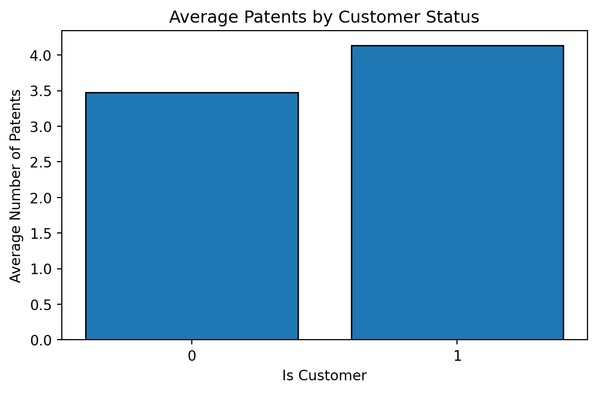
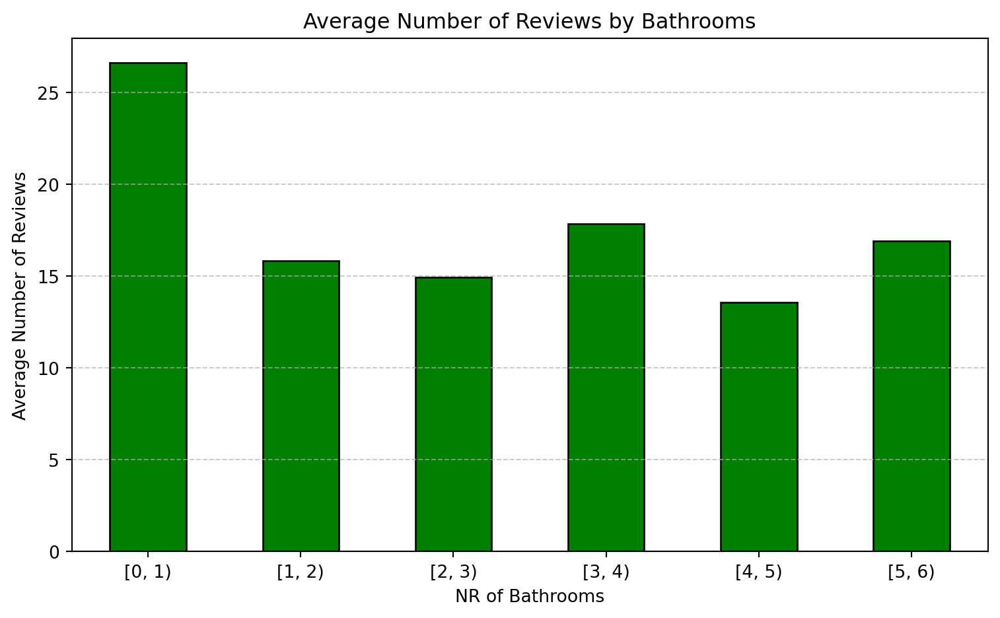

blueprint_hist = pd.pivot_table(blueprinty, index='iscustomer', values='patents', aggfunc='mean').head()
display(blueprint_hist)
blueprint_hist = blueprint_hist.reset_index()| patents | |
|---|---|
| iscustomer | |
| 0 | 3.473013 |
| 1 | 4.133056 |
Blueprinty is a small firm that makes software for developing blueprints specifically for submitting patent applications to the US patent office. Their marketing team would like to make the claim that patent applicants using Blueprinty’s software are more successful in getting their patent applications approved. Ideal data to study such an effect might include the success rate of patent applications before using Blueprinty’s software and after using it. Unfortunately, such data is not available.
However, Blueprinty has collected data on 1,500 mature (non-startup) engineering firms. The data include each firm’s number of patents awarded over the last 5 years, regional location, age since incorporation, and whether or not the firm uses Blueprinty’s software. The marketing team would like to use this data to make the claim that firms using Blueprinty’s software are more successful in getting their patent applications approved.
blueprint_hist = pd.pivot_table(blueprinty, index='iscustomer', values='patents', aggfunc='mean').head()
display(blueprint_hist)
blueprint_hist = blueprint_hist.reset_index()| patents | |
|---|---|
| iscustomer | |
| 0 | 3.473013 |
| 1 | 4.133056 |

On average if a firm is a customer they have slightly more patents then a noncustomer
Blueprinty customers are not selected at random. It may be important to account for systematic differences in the age and regional location of customers vs non-customers.
blueprinty['age_bins']= pd.cut(blueprinty['age'], bins=[0, 20, 30, 40, 50], right=False)
blueprint_hist_age =pd.crosstab(index=blueprinty['age_bins'], columns=blueprinty['iscustomer'],margins=True,margins_name='Total')
display(blueprint_hist_age)| iscustomer | 0 | 1 | Total |
|---|---|---|---|
| age_bins | |||
| [0, 20) | 205 | 98 | 303 |
| [20, 30) | 496 | 213 | 709 |
| [30, 40) | 291 | 142 | 433 |
| [40, 50) | 27 | 28 | 55 |
| Total | 1019 | 481 | 1500 |
blueprint_hist_region= pd.crosstab(index=blueprinty['region'], columns=blueprinty['iscustomer'],margins=True,margins_name='Total')
display(blueprint_hist_region)| iscustomer | 0 | 1 | Total |
|---|---|---|---|
| region | |||
| Midwest | 187 | 37 | 224 |
| Northeast | 273 | 328 | 601 |
| Northwest | 158 | 29 | 187 |
| South | 156 | 35 | 191 |
| Southwest | 245 | 52 | 297 |
| Total | 1019 | 481 | 1500 |
Most Firms are in the 20 - 30 age range. Additoinaly there is a disporpoiante amount of customers who are in the the North East region. We may see a higher coeffcient weight on these 2 characteristcs due to them being overrepresented in the data.
Since our outcome variable of interest can only be small integer values per a set unit of time, we can use a Poisson density to model the number of patents awarded to each engineering firm over the last 5 years. We start by estimating a simple Poisson model via Maximum Likelihood.
The probability of observing a count \(( y_i )\) for observation \(( i )\), given Poisson rate \(( \lambda_i )\), is:
\[ P(Y_i = y_i \mid \lambda_i) = \frac{e^{-\lambda_i} \lambda_i^{y_i}}{y_i!} \]
Assuming we observe \(( n )\) independent data points \(( y_1, y_2, \ldots, y_n )\), each with rate \(( \lambda_i )\), the joint likelihood is the product of the individual probabilities: \[ \mathcal{L}(\lambda_1, \ldots, \lambda_n) = \prod_{i=1}^{n} \frac{e^{-\lambda_i} \lambda_i^{y_i}}{y_i!} \]
Taking the natural logarithm of the likelihood simplifies the product into a sum: \[ \log \mathcal{L} = \sum_{i=1}^{n} \left( -\lambda_i + y_i \log(\lambda_i) - \log(y_i!) \right) \] This is the log-likelihood function for the Poisson model.
import numpy as np
from math import factorial
def poisson_distro(lmbda, y):
return (np.exp(-lmbda) * (lmbda ** y)) / factorial(y)
def poisson_likelihood(lmbda, y_array):
return np.prod([poisson_distro(lmbda, y_i) for y_i in y_array])
from scipy.special import gammaln
def poisson_log_likelihood(lmbda, y_array):
y_array = np.array(y_array)
return np.sum(-lmbda + y_array * np.log(lmbda) - gammaln(y_array + 1))We changed from the factorial to the gammln function in the log likelihood function. When using factrioal numbers get extremely large and could cause overflow errors. Gammaln works like an integral of the factorial function which will make the math less computatiaonlly expensivve
# Evaluate log-likelihoods across lambda values
lambda_vals = np.arange(1, 20)
log_likelihoods = [poisson_log_likelihood(lmbda, blueprinty['patents'].values) for lmbda in lambda_vals]The log-likelihood for the entire sample is:
\[ \log \mathcal{L}(\lambda) = \sum_{i=1}^{n} \left( -\lambda + y_i \log(\lambda) - \log(y_i!) \right) \]
Simplify:
\[ \ell(\lambda) = -n\lambda + \left( \sum_{i=1}^n y_i \right) \log(\lambda) - \sum_{i=1}^n \log(y_i!) \]
To find the MLE, take the derivative and set it equal to zero:
\[ \frac{d}{d\lambda} \ell(\lambda) = -n + \frac{\sum y_i}{\lambda} \]
Set the derivative to zero:
\[ -n + \frac{\sum y_i}${\lambda} = 0 \]
\[ \frac{\sum y_i}{\lambda} = n \quad \Rightarrow \quad \lambda = \frac{1}{n} \sum y_i = \bar{y} \]
So the MLE for \(( \lambda )\) in a Poisson distribution is the sample mean:
\[ \hat{\lambda}_{\text{MLE}} = \bar{y} \]
from scipy.optimize import minimize_scalar
from scipy.special import gammaln
# ecause scipy.optimize minimizes by default, we minimize the negative log-likelihood
#Trick the minimze function into finding the maximum log likelhood with a negative
#lambda lmbda --> Keep calling the function with lambda as the lmbda value
objective = lambda lmbda: -poisson_log_likelihood(lmbda, blueprinty['patents'].values)
# Perform the optimization using bounded scalar minimization
result = minimize_scalar(objective, bounds=(0.01, 20), method='bounded')
# Output the MLE estimate for lambda
lambda_mle = result.x
log_likelihood_at_mle = -result.funMLE for λ: 3.6847
sample mean : 3.6847
Log-Likelihood at MLE: -3367.68
Next, we extend our simple Poisson model to a Poisson Regression Model such that \(Y_i = \text{Poisson}(\lambda_i)\) where \(\lambda_i = \exp(X_i'\beta)\). The interpretation is that the success rate of patent awards is not constant across all firms (\(\lambda\)) but rather is a function of firm characteristics \(X_i\). Specifically, we will use the covariates age, age squared, region, and whether the firm is a customer of Blueprinty.
We assume the Poisson rate parameter \(( \lambda )\) varies by observation based on covariates \(( X_i )\) and a parameter vector \(( \beta )\):
\[ \lambda_i = \exp(X_i^\top \beta) \]
This ensures \(( \lambda_i > 0 )\) for all \(( i )\), as required for Poisson distributions. The exponential function is the canonical inverse link function for Poisson regression.
Given the model \(( Y_i \sim \text{Poisson}(\lambda_i) )\), the log-likelihood function across all observations is:
\[ \ell(\beta) = \sum_{i=1}^n \left[ -\exp(X_i^\top \beta) + y_i (X_i^\top \beta) - \log(y_i!) \right] \]
This is the function we will maximize to estimate \(( \beta )\) using maximum likelihood estimation.
def poisson_log_likelihood_regression(beta, X, y):
# Ensure all inputs are NumPy arrays
if not isinstance(beta, np.ndarray):
beta = np.asarray(beta)
if not isinstance(X, np.ndarray):
X = np.asarray(X)
if not isinstance(y, np.ndarray):
y = np.asarray(y)
eta = X @ beta
lambda_ = np.exp(eta)
return np.sum(-lambda_ + y * eta - gammaln(y + 1))from scipy.optimize import minimize
blueprinty['age_scaled'] = (blueprinty['age'] - blueprinty['age'].mean()) / blueprinty['age'].std()
blueprinty['age_squared'] = blueprinty['age_scaled'] ** 2
blueprinty['intercept'] = 1
encoded_region = pd.get_dummies(blueprinty['region'], prefix='region', drop_first=True)
blueprinty = pd.concat([blueprinty, encoded_region], axis=1)
X = blueprinty[['intercept', 'age_scaled', 'age_squared', 'region_Northeast', 'region_Northwest',
'region_South', 'region_Southwest', 'iscustomer']].astype(float).to_numpy()
y = blueprinty['patents'].values
initial_beta = np.zeros(X.shape[1])
result = minimize(
fun=lambda b: -poisson_log_likelihood_regression(b, X, y),
x0=initial_beta,
method='BFGS'
)
beta_mle = result.x
log_lik_at_mle = -result.fun
hessian_inv = result.hess_inv
standard_errors = np.sqrt(np.diag(hessian_inv))| Variable | Estimate (MLE) | Std. Error |
|---|---|---|
| intercept | 1.3447 | 0.0366 |
| age_scaled | -0.0577 | 0.0151 |
| age_squared | -0.1558 | 0.0131 |
| region_Northeast | 0.0292 | 0.0456 |
| region_Northwest | -0.0176 | 0.0553 |
| region_South | 0.0566 | 0.0543 |
| region_Southwest | 0.0506 | 0.0505 |
| iscustomer | 0.2076 | 0.0312 |
Log-Likelihood at MLE: -3258.07
import statsmodels.api as sm
# Use the same standardized/scaled features
X_sm = blueprinty[['age_scaled', 'age_squared', 'region_Northeast',
'region_Northwest', 'region_South', 'region_Southwest', 'iscustomer']].astype(float).to_numpy()
# Add intercept (statsmodels handles it with sm.add_constant)
X_sm = sm.add_constant(X_sm)
y_sm = blueprinty['patents']
model = sm.GLM(y_sm, X_sm, family=sm.families.Poisson())
result = model.fit()
print(result.summary()) Generalized Linear Model Regression Results
==============================================================================
Dep. Variable: patents No. Observations: 1500
Model: GLM Df Residuals: 1492
Model Family: Poisson Df Model: 7
Link Function: Log Scale: 1.0000
Method: IRLS Log-Likelihood: -3258.1
Date: Mon, 05 May 2025 Deviance: 2143.3
Time: 21:09:19 Pearson chi2: 2.07e+03
No. Iterations: 5 Pseudo R-squ. (CS): 0.1360
Covariance Type: nonrobust
==============================================================================
coef std err z P>|z| [0.025 0.975]
------------------------------------------------------------------------------
const 1.3447 0.038 35.059 0.000 1.270 1.420
x1 -0.0577 0.015 -3.843 0.000 -0.087 -0.028
x2 -0.1558 0.014 -11.513 0.000 -0.182 -0.129
x3 0.0292 0.044 0.669 0.504 -0.056 0.115
x4 -0.0176 0.054 -0.327 0.744 -0.123 0.088
x5 0.0566 0.053 1.074 0.283 -0.047 0.160
x6 0.0506 0.047 1.072 0.284 -0.042 0.143
x7 0.2076 0.031 6.719 0.000 0.147 0.268
==============================================================================The strongest effect is from iscustomer Age has a mild downward effect Region effects are minor
# Step 1: Copy X and set iscustomer to 0 and 1 for every firm
X_0 = X.copy()
X_1 = X.copy()
iscustomer_index = column_names.index("iscustomer") # Adjust if you know the column index directly
X_0[:, iscustomer_index] = 0
X_1[:, iscustomer_index] = 1
# Step 2: Predict lambda (expected # patents) for both scenarios
y_pred_0 = np.exp(X_0 @ beta_mle)
y_pred_1 = np.exp(X_1 @ beta_mle)
# Step 3: Estimate average treatment effect of being a customer
avg_effect = np.mean(y_pred_1 - y_pred_0)Estimated average effect of using Blueprinty's software on patent success: 0.7928AirBnB is a popular platform for booking short-term rentals. In March 2017, students Annika Awad, Evan Lebo, and Anna Linden scraped of 40,000 Airbnb listings from New York City. The data include the following variables:
todo: Assume the number of reviews is a good proxy for the number of bookings. Perform some exploratory data analysis to get a feel for the data, handle or drop observations with missing values on relevant variables, build one or more models (e.g., a poisson regression model for the number of bookings as proxied by the number of reviews), and interpret model coefficients to describe variation in the number of reviews as a function of the variables provided.
airbnb['price_bins'] = pd.cut(airbnb['price'], bins=[0,500,5000, 10000], right=False)
airbnb['bathrooms_bins'] = pd.cut(airbnb['bathrooms'], bins=[0, 1, 2, 3, 4, 5, 6], right=False)
airbnb['bedrooms_bins'] = pd.cut(airbnb['bedrooms'], bins=[0, 1, 2, 3, 4, 5, 6], right=False)
airbnb['number_of_reviews_bins'] = pd.cut(airbnb['number_of_reviews'], bins=[0, 10, 20, 30, 40, 50, 60, 70, 80, 90, 100], right=False)| mean | |
|---|---|
| number_of_reviews | |
| bathrooms_bins | |
| [0, 1) | 26.604061 |
| [1, 2) | 15.846360 |
| [2, 3) | 14.943998 |
| [3, 4) | 17.843854 |
| [4, 5) | 13.571429 |
| [5, 6) | 16.923077 |
| Total | 15.837927 |

| mean | |
|---|---|
| number_of_reviews | |
| bathrooms_bins | |
| [0, 1) | 26.604061 |
| [1, 2) | 15.846360 |
| [2, 3) | 14.943998 |
| [3, 4) | 17.843854 |
| [4, 5) | 13.571429 |
| [5, 6) | 16.923077 |
| Total | 15.837927 |

airbnb = airbnb[airbnb['price'] <= 500]Drop rows with missing values across all relevant columns (before plotting)
eda_cols = ['number_of_reviews', 'price', 'bathrooms', 'bedrooms', 'days']
airbnb_eda = airbnb.dropna(subset=eda_cols) Generalized Linear Model Regression Results
==============================================================================
Dep. Variable: number_of_reviews No. Observations: 39654
Model: GLM Df Residuals: 39650
Model Family: Poisson Df Model: 3
Link Function: Log Scale: 1.0000
Method: IRLS Log-Likelihood: -7.1266e+05
Date: Mon, 05 May 2025 Deviance: 1.3039e+06
Time: 21:09:20 Pearson chi2: 2.13e+06
No. Iterations: 6 Pseudo R-squ. (CS): 0.07089
Covariance Type: nonrobust
==============================================================================
coef std err z P>|z| [0.025 0.975]
------------------------------------------------------------------------------
const 2.7975 0.005 620.600 0.000 2.789 2.806
price 0.0002 1.58e-05 10.273 0.000 0.000 0.000
bathrooms -0.1415 0.004 -34.929 0.000 -0.149 -0.134
bedrooms 0.0928 0.002 43.494 0.000 0.089 0.097
==============================================================================airbnb_eda['intercept'] = 1
X = airbnb_eda[['intercept','price', 'bathrooms', 'bedrooms']].astype(float).to_numpy()
y = airbnb_eda['number_of_reviews'].values
initial_beta = np.zeros(X.shape[1])
result = minimize(
fun=lambda b: -poisson_log_likelihood_regression(b, X, y),
x0=initial_beta,
method='BFGS'
)
beta_mle = result.x
log_lik_at_mle = -result.fun
hessian_inv = result.hess_inv
standard_errors = np.sqrt(np.diag(hessian_inv))
coef_df = pd.DataFrame({
'Variable': ['intercept','price', 'bathrooms', 'bedrooms'],
'Estimate (MLE)': [f"{val:.4f}" for val in beta_mle],
'Std. Error': [f"{se:.4f}" for se in standard_errors]
})| Variable | Estimate (MLE) | Std. Error |
|---|---|---|
| intercept | 2.7975 | 0.0047 |
| price | 0.0002 | 0.0000 |
| bathrooms | -0.1415 | 0.0043 |
| bedrooms | 0.0928 | 0.0021 |
Log-Likelihood at MLE: -712663.27
In this Poisson regression model, each additional bedroom is associated with a 9.3% increase in expected reviews. Bathrooms have a negative effect, with each additional bathroom linked to a 14% decrease. Price has a statistically significant but negligible impact, increasing expected reviews by just 0.02% per dollar.